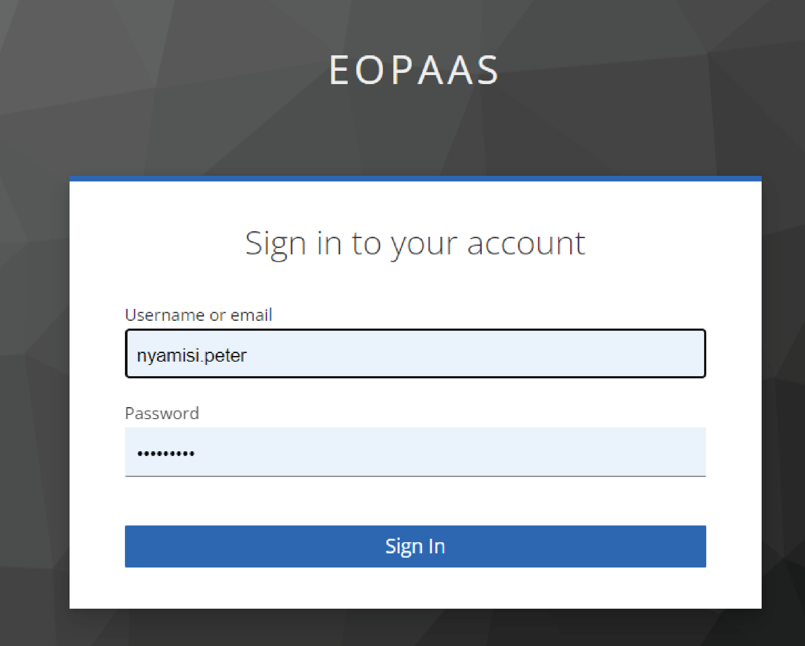
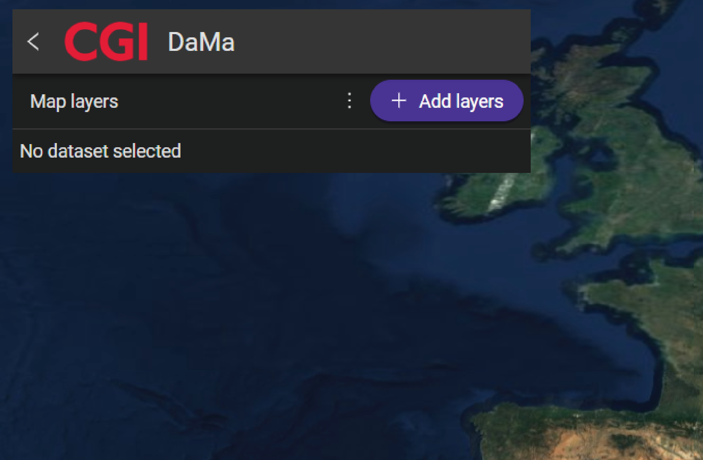
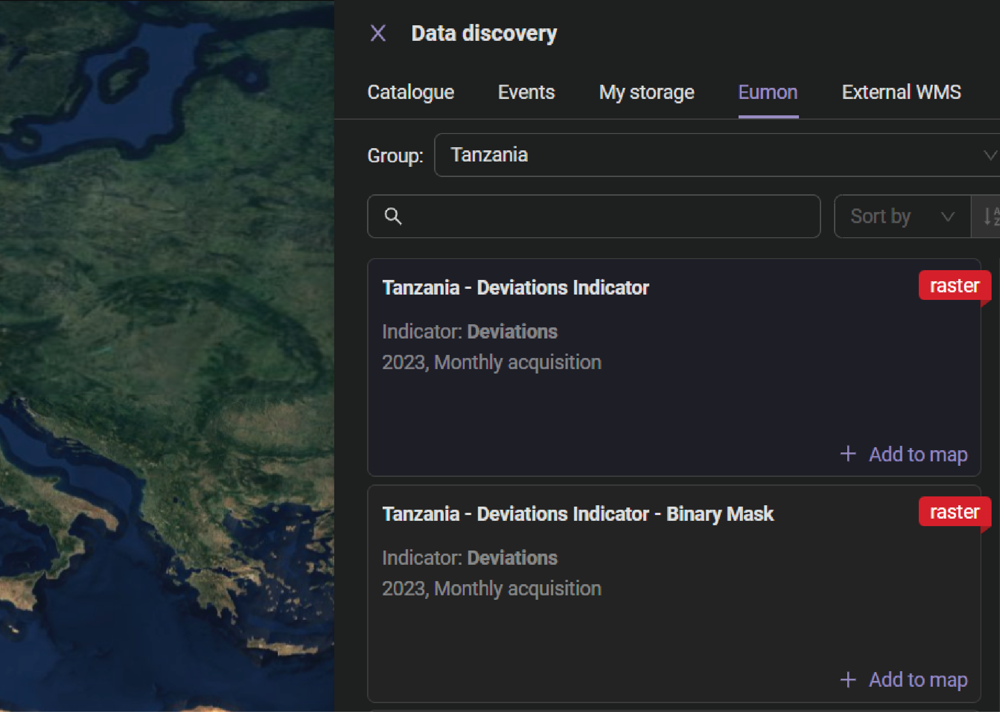
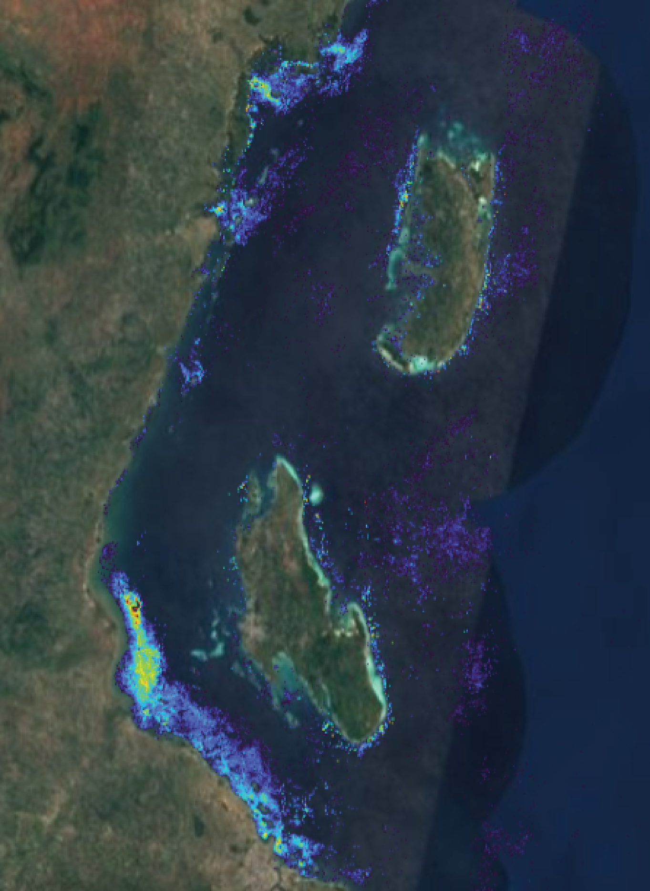
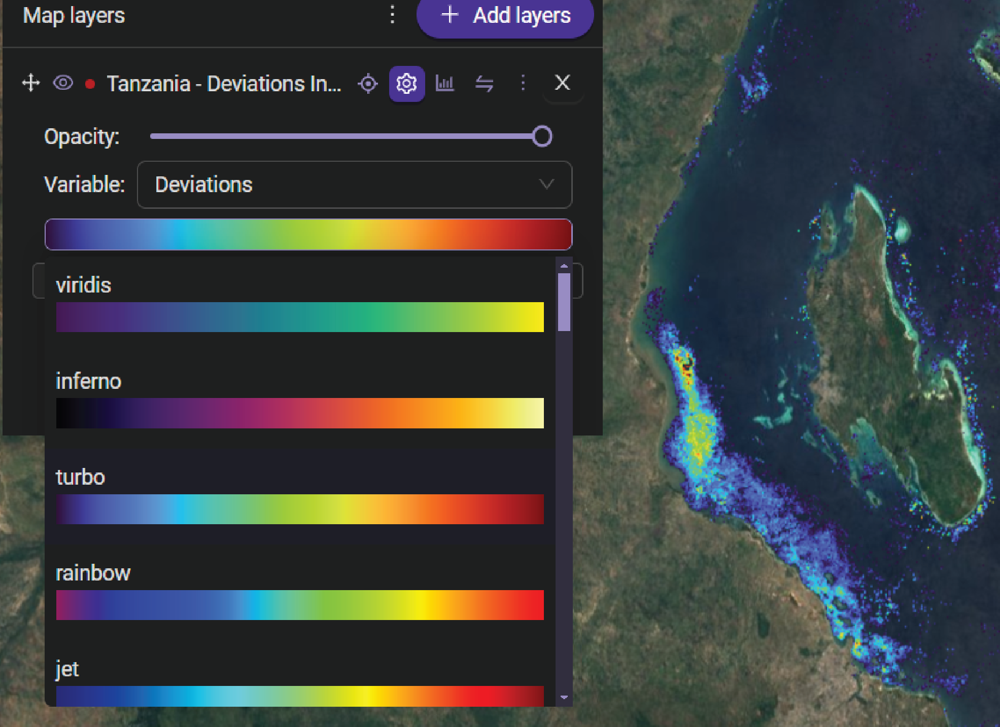
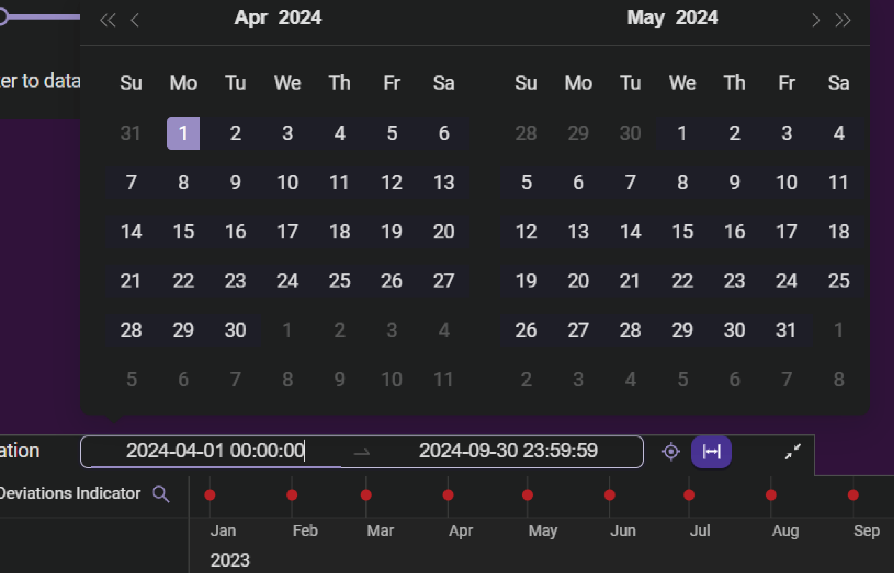
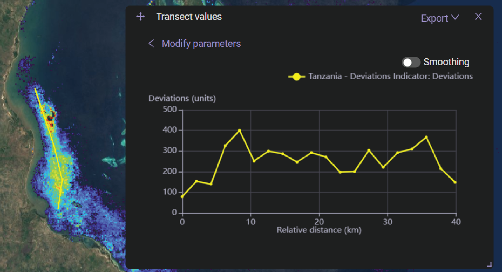
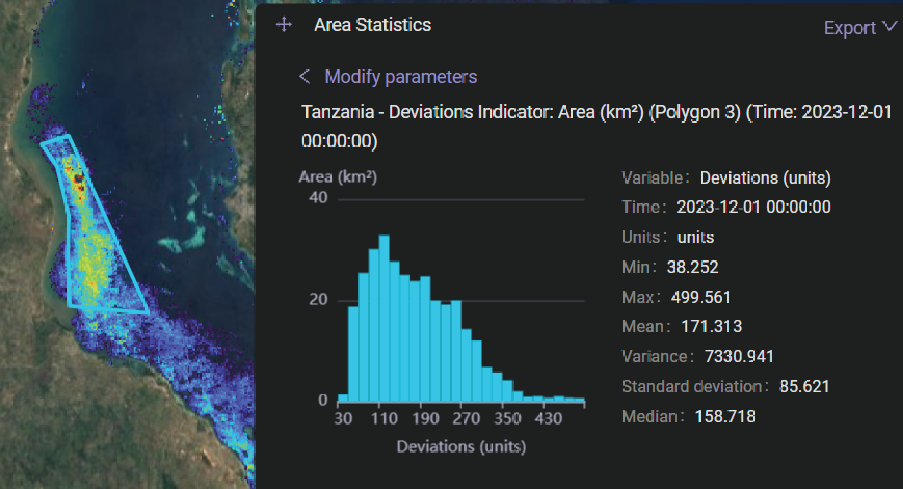
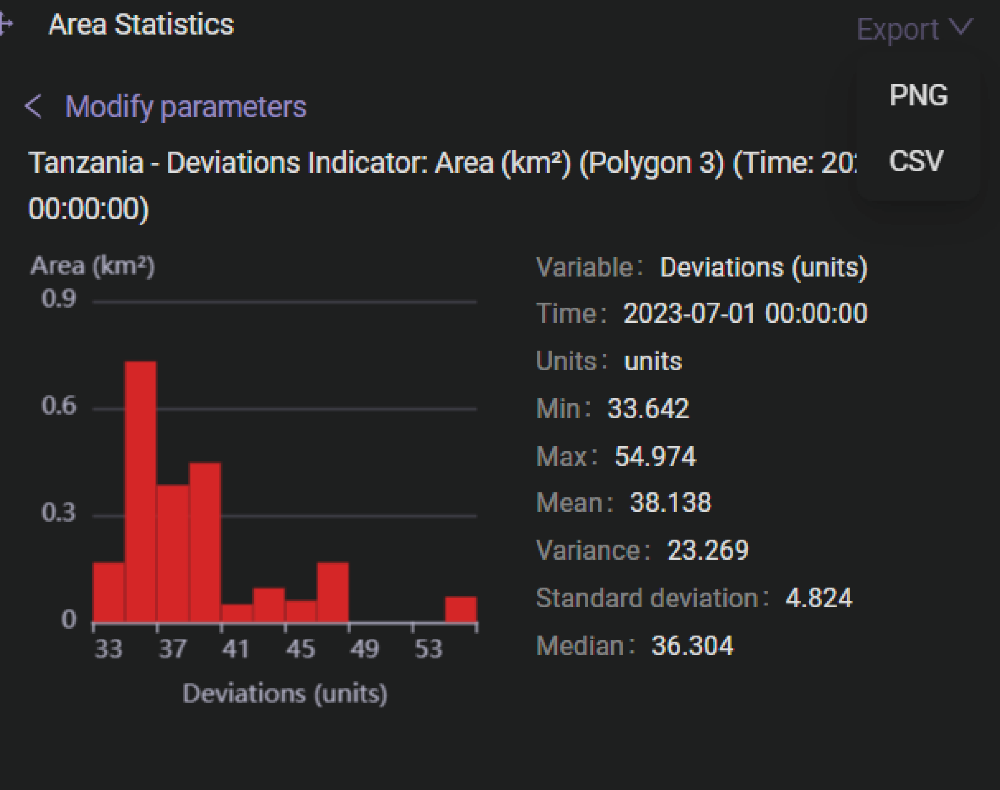
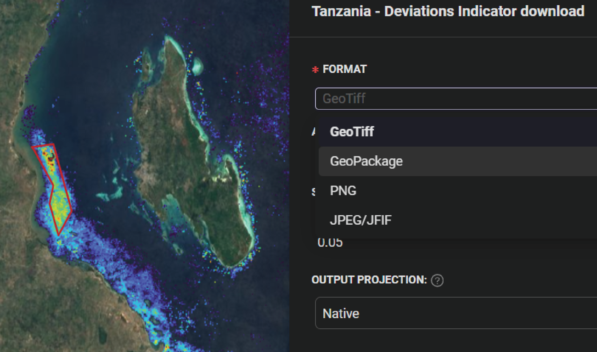

Earth Observation for monitoring and studying coastal Eutrophication and its related phenomena
1 Introduction
1.1 Overview of coastal eutrophication
Coastal eutrophication, a phenomenon increasingly observed worldwide, poses significant ecological and environmental challenges (Akinnawo, 2023; Malone and Newton, 2020). Eutrophication, characterized by excessive nutrient enrichment in aquatic ecosystems, particularly coastal areas, is a result of human activities such as agricultural runoff, wastewater discharge, and industrial processes (Akinnawo, 2023; Malone and Newton, 2020; Sonarghare et al., 2020; Zhang et al., 2023). These nutrients, predominantly nitrogen and phosphorus, fuel the rapid growth of algae and phytoplankton, leading to the formation of algal blooms and subsequent depletion of oxygen levels in the water, a process known as hypoxia (Sonarghare et al., 2020; Zhang et al., 2023). The detrimental effects of coastal eutrophication are manifold, ranging from impaired water quality and biodiversity loss to detrimental impacts on fisheries, tourism, and human health.
Earth observation techniques, Utilizing satellite imagery, remote sensing, and advanced data analysis, have emerged as essential tools in monitoring and understanding coastal eutrophication dynamics. By providing comprehensive spatial and temporal information on nutrient concentrations, algal blooms, and associated environmental parameters, earth observation technologies offer a good insights into the drivers, extent, and impacts of eutrophication in coastal regions (Akinnawo, 2023; Malone and Newton, 2020; Sonarghare et al., 2020; Zhang et al., 2023). This holistic approach enables researchers, and environmental managers to develop informed mitigation strategies and sustainable management practices to address the complex challenges posed by coastal eutrophication.
2 Functionalities of the system
2.1 Sign in and tool opening
The functionality of the tool is highly efficient and user-friendly. One of its standout features is the login process, which is facilitated by entering user credentials. This streamlined approach ensures that users can access the tool quickly and with no effort hence enhancing their overall experience. Whether logging in for the first time or returning to the platform, the straightforward login mechanism contributes to the ease use and accessibility of the tool.

Upon successful sign-in, the tool can transition the user to the main interface, where the display map is prominently featured. Here, users are presented with a range of options and functionalities, empowering them to interact with the tool effectively. Among these functionalities is the ability to add layers to the map, allowing users to customize their viewing experience and access relevant data overlays. This streamlined approach ensures that users can navigate the tool efficiently and exploit its full suite of features with ease.

2.2 Adding layer
Upon launching the tool, users have the option to add a layer chosen from the available selections. By accessing the Add Layer pop-up window and navigating to the Eumon tab, users can conveniently choose a group where the layers pertaining to the selected group will be displayed. Within this tab, users are presented with multiple layers, allowing them the flexibility to select the specific layer of interest.

Therafter, the datasets corresponding to the selected layer will be showcased on the map. A color palette will be utilized to visually represent the range of values within the datasets, thereby providing users with a clear understanding of the data distribution across the map.

Following this, users have the option to choose their preferred palette. This can be accessed through the toggle visualization setting menu of the layer. Additionally, users can adjust the transparency (opacity) of the color directly from these settings, granting them further customization control over the displayed data.

Afterwards, users can specify the desired time range for the dataset of interest directly from the map interface. This functionality is accessible via the Time Navigation settings located at the bottom of the map layer. By utilizing this feature, users can refine their data visualization based on specific time periods, and this will enhance their ability to analyze temporal trends and patterns.

2.3 Data exploration
The tool provides users with the capability to conduct various statistical analyses, such as calculating the distribution of the dataset within a specified transect or area. This functionality enables users to extract valuable insights by quantifying the spatial distribution of data points along designated transects or within defined geographic areas.


2.4 Exporting datasets
The datasets extracted from the designated area or transect can be conveniently exported to a PNG or CSV format, allowing users to utilize the image for various purposes. However, it is important to note that currently, only the PNG format is supported for exporting data of a transect or area.

Conversely, the raster layer can also be exported in a variety of formats, including GeoTiff, GeoPackage, or as image to a PNG, or JPEG. This versatility enables users to utilize the raster data across different software platforms, facilitating integration and analysis in their preferred tools or environments.

2.5 Limitation of the tool
When adding a layer, there are currently no descriptions of the dataset provided. This lack of information makes it challenging for users to understand the nature of each layer and the distinctions between them. Additionally, the absence of units for the datasets within each layer makes it difficult to interpret the numerical values displayed after selecting a particular layer. Another drawback of the tool is its inability to respond when users attempt to export data in CSV format. Unfortunately, the tool does not support this function, hindering users from accessing data in a preferred format for analysis or sharing purposes.
To address these issues, I recommend including a brief description for each layer. For instance, if the user selects the Deviation Indicator or Anomaly layer, there should be a short explanation indicating whether it represents deviations in algal bloom levels, microplastic pollution, chlorophyll concentration or any other relevant variable. Furthermore, specifying the units for these variables would assist users in discerning the differences between them and will interpret the numerical data accurately. In case of data export, I recommend the developer to incorporate a feature that allows users to export data in CSV format easily. By enabling this functionality, will help greater flexibility of the user in accessing and utilizing the data generated by the tool.
3 Importance of a tool
This tool holds significant importance for various institutions within our nation that are involved in managing aquatic ecosystems and environmental conservation efforts. It provides an important platform through which these institutions can access eutrophication data, addressing a major challenge faced by our country. The following are some of the key advantages this tool offers to these institutions:
3.1 Functionality
The tool seems to offer a wide range of functionalities, including data visualization, analysis, and export options. Its ability to incorporate various layers and datasets, as well as provide customization features like palette selection and transparency adjustments, enhances its utility.
3.2 User-Friendliness
It appears that the tool is designed with user experience in mind, offering a straightforward interface and intuitive navigation. Features such as the ability to easily add layers, adjust settings, and export data contribute to its user-friendliness.
3.3 Data Accessibility
The integration of the tool with the Earth observation data for monitoring coastal eutrophication is very appreciated. By utilizing satellite imagery and remote sensing techniques, it enables users to access valuable spatial and temporal information for monitoring and understanding environmental dynamics.
3.4 Export Options
While the tool supports exporting data in PNG format, the absence of support for exporting in CSV format for certain functionalities like transect or area data may be seen as a limitation. However, the availability of export options for raster layers in various formats like GeoTiff and GeoPackage enhances its versatility and compatibility.
Lastly, the tool appears to offer valuable functions for monitoring coastal eutrophication through Earth observation, with potential for further optimization and expansion based on user needs and technological advancements.
4 How the tool can be used in Tanzania
The tool can be used in Tanzania at different areas:
- Monitoring Coastal Eutrophication:
Tanzania, with its extensive coastline along the Indian Ocean and numerous freshwater bodies, faces challenges related to coastal eutrophication. The tool can be used by National Environment Management Council (NEMC) to monitor and assess the extent of eutrophication in coastal areas. This will help in development of effective management strategies.
- Managing Fisheries:
The tool can aid Tanzania Fisheries Research Institute (TAFIRI) in monitoring water quality and identifying areas affected by eutrophication, which can impact fish habitats and stocks. By knowing these dynamics, TAFIRI may implement measures to manage fisheries resources in a sustainable manner.
- Tourism Development:
The coastal regions in Tanzania including Zanzibar, Pwani and Dar es Salaam, rely heavily on tourism. Monitoring and maintaining water quality is important for sustaining tourism activities. The tool can assist in assessing water quality parameters and identifying areas where appropriate actions may be necessary to safeguard tourism assets.
- Research and Education:
Academic institutions and research organizations in Tanzania can utilize the tool for research purposes, studying the dynamics of coastal eutrophication, conducting environmental monitoring studies, and raising awareness about the importance of conserving aquatic ecosystems among students and local communities.
- International Collaboration:
Tanzania can utilize the tool to collaborate with international organizations, research institutions, and neighboring countries on regional initiatives aimed at addressing shared challenges related to coastal eutrophication and water quality management.
- Policy Formulation:
Data generated by the tool can be used to advice the decision-makers on the development of policies and regulations related to water quality management, coastal zone management, and sustainable development in Tanzania. Decision-makers can use evidence-based information to formulate effective policies and allocate resources efficiently.